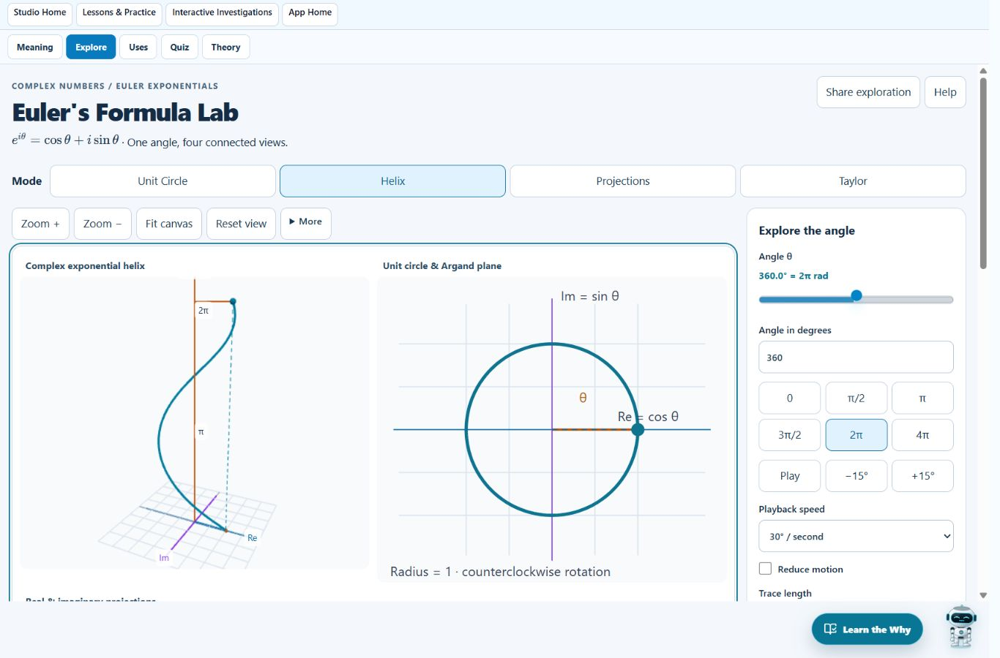
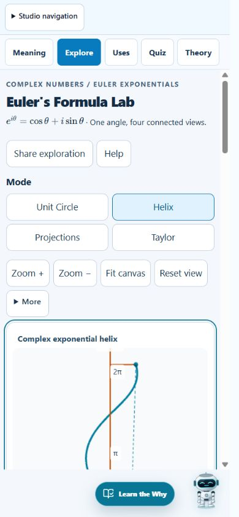
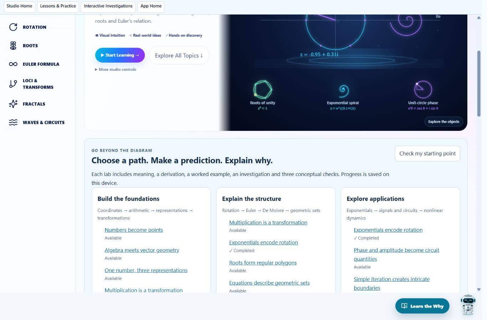
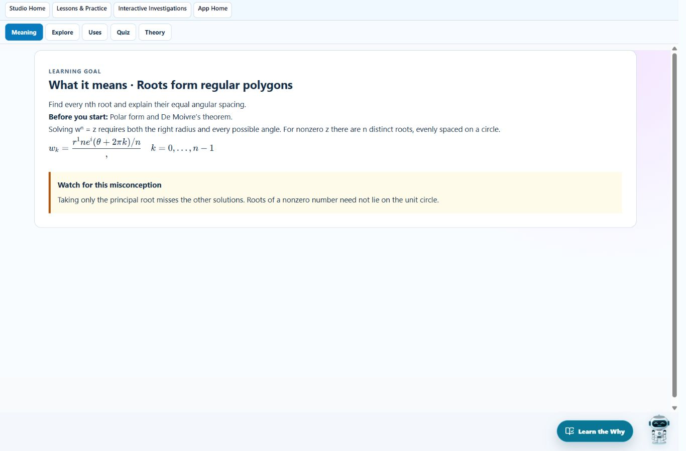

30 Euler interface and learning enhancements; all nine labs have prerequisites, meaning, derivations, worked examples, investigations, misconceptions and three conceptual checks. The studio home adds three paths, a foundation diagnostic and a notation glossary.
Saved locally on 11 October 2026. The live website has not been deployed.


| # | Enhancement | Implemented behavior |
|---|---|---|
| 1 | Mode label | Dedicated label and a 2 × 2 phone mode selector. |
| 2 | Mobile navigation | Collapsible studio navigation; redundant phone sidebar removed. |
| 3 | Visible modes | All four Euler modes remain visible without horizontal scrolling. |
| 4 | Compact toolbar | Zoom, fit and reset stay visible; other actions are under More. |
| 5 | Single scrolling | The outer lab panel scrolls; nested complex studio containers do not. |
| 6 | Earlier visualization | Compact learning tabs and header; camera presets follow the figure. |
| 7 | Unobstructed content | Reserved footer space for the smaller assistant and learning button. |
| 8 | Typeset mathematics | KaTeX equations in the Euler workspace, topic preview and learning panels. |
| 9 | Control contrast | Readable text controls with explicit selected and disabled states. |
| 10 | Control grouping | Separate modes, mathematical parameters, camera presets and coaching. |
| 11 | Degrees and radians | Both units appear together, with exact labels at quarter turns. |
| 12 | Direct angle entry | Bounded numerical input from 0° to 720°, linked with the slider. |
| 13 | Angle shortcuts | 0, π/2, π, 3π/2, 2π and 4π shortcuts. |
| 14 | Playback | Play/pause, 15° steps, speed selection and a 720° stop. |
| 15 | Helix axes | Colored Re, Im and θ axes, with radians on the angle axis. |
| 16 | Third dimension explained | Unwrapped angle is distinguished from the complex components. |
| 17 | Camera presets | 3D, complex plane, cosine and sine projections. |
| 18 | Interaction guidance | Visible drag/pinch instructions and expanded Help. |
| 19 | Consistent colors | Blue real, purple imaginary, amber angle, teal exact, pink Taylor. |
| 20 | Legend | Text and marker shapes distinguish exact and Taylor values. |
| 21 | Trace length | Quarter-turn to two-turn history control for the circle and helix. |
| 22 | Angle and radius | Angle arc, unit radius and projected component guides. |
| 23 | Linked comparison | Optional simultaneous helix, circle and sine/cosine views. |
| 24 | Taylor error | Live Euclidean error between the partial sum and exact point. |
| 25 | Taylor terms explained | N counts n = 0 through N−1; the constant term and radians are explicit. |
| 26 | Guided learning | Five selectable steps, sequential progression and relevant-panel highlighting. |
| 27 | Prediction | Next-quarter-turn prediction with checking and reveal on the figure. |
| 28 | Challenge feedback | Separate blank, invalid, incorrect and correct responses with a hint. |
| 29 | Accessibility | Keyboard controls, focus rings, point descriptions, reduced-motion playback and 3D fallback. |
| 30 | Complete shared state | Angle, terms, trace, camera position/target, split view, grid, labels, zoom and speed saved in fig URL state. |


43 scope-specific tests pass. Student production build passes. Changed-file lint has no errors and one existing shared-outlet hook warning. The whole repository typecheck reports 123 errors outside the changed complex-studio files; a wider route test also fails on an existing trigonometry class-name expectation.
Browser checks cover desktop/phone layouts, angle and Taylor linking, playback, reduced motion, grading, persistence, shared-state reload and SVG export. Print and fullscreen platform dialogs were not exercised.
Test log · Build log · Lint log · Repository typecheck log · Structured enhancement record